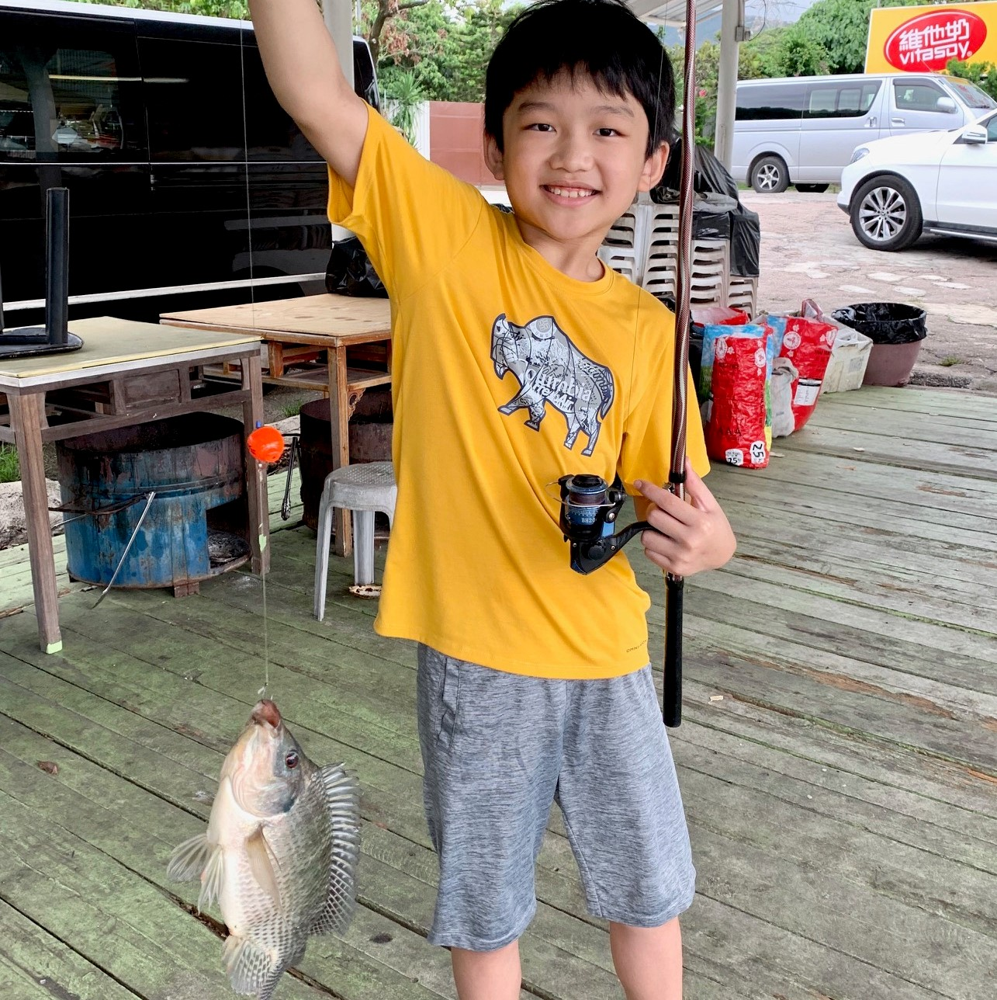

Lucas Sun
Home
Elements
Stories
Mr. Fish Stories
The Multi-Dimensional War Series
Python
The Multi-Dimensional War
You can buy the first book now:
The Solar Fight
Written by Lucas Sun
Discussion and Blog on padlet.com